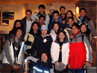
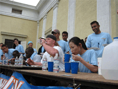
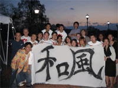

"Although this organization has members who are University of Virginia students and may have University employees associated or engaged in its activities and affairs, the organization is not a part of or an agency of the University. It is a separate and independent organization which is responsible for and manages its own activities and affairs. The University does not direct, supervise or control the organization and is not responsible for the organization’s contracts, acts or omissions.

"In 2004, JC took a big step in becoming one of the most popular cultural organizations at UVA by hosting a wing eating contest called the Gorge-A-Thon. This event featured Sonya “The Black Widow” Thomas, currently the #3 eater in the world , and several UVA football players as guest participants. Gorge-A-Thon fuelled JC by giving University-wide publicity and attention to the club.

"In the spring of 2005 JC undertook the ambitious project of hosting its first annual Japan Day to spread Japanese Culture awareness to the UVA community. Japan Day was designed to represent the “Matsuri” (Japanese festival) and consisted of free Japanese food, games, cultural presentations, movie showing, and Kimono station where students could try on the Japanese traditional clothes. By providing first hand experiences in various aspects of the Japanese culture, Japan Day successfully displayed what JC could offer to the University and the Charlottesville area. This achievement also proved that JC is now an established cultural organization comparable to other CIOs such as CSA, KSA, VSA, TSA, and OYFA.
One thing that has not changed throughout the history of JC is that the officers and members have always been a diverse group of students. JC is not just a group of Japanese students, but an organization that brings together students of any race and age to share their interest in various aspect of Japan. Many people join JC because they are fascinated by this diversity of the club. JC should continue to keep its door open to anyone in our community in order to carry on its appealing characteristics.”
- James Fukuda (2007)
Today, although the organization name and members may have changed, the same ideals and goals the original club was founded upon remain untouched. It is with much hard work and dedication that the club members continue to strive to bring Japanese culture and awareness to the community while making lasting memories with each other. The history of JC will continue to be written for years to come as a reminder of everyone who contributed to creating an unforgettable experience through Japanese culture and heritage.